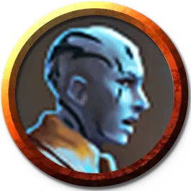

Зот
Xot
Средний Гуманоид, любое мировоззрение, именной НИП

Класс Доспеха 16 (кираса)
Хиты 67 (9к8 + 27)
Скорость 30 футов
| мод | спас | ||
|---|---|---|---|
| СИЛ | 15 | +2 | +5 |
| ЛОВ | 14 | +2 | +2 |
| ТЕЛ | 16 | +3 | +3 |
| мод | спас | ||
|---|---|---|---|
| ИНТ | 14 | +2 | +4 |
| МДР | 14 | +2 | +2 |
| ХАР | 12 | +1 | +1 |
Навыки Атлетика +4, История +4, Магия +4
Сопротивление урону холод
Чувства пассивное Восприятие 12
Языки Общий, Великаний
Опасность 3 (700 опыта)
Бонус мастерства +2
Особенности
Эксперт по осаде. Зот наносит двойной урон объектам и сооружениям.
Мощное телосложение. Зот считается на один размер больше когда определяется её грузоподъемность и вес, который она может толкать, тянуть и поднимать с земли.
Действия
Мультиатака. Зот совершает три атаки Громовым боевым молотом.
Громовой боевой молот. . Рукопашная атака оружием: +4 к попаданию, досягаемость 5 футов, одна цель. Попадание: 7 (1к10 + 2) урона звуком.
Бонусные действия
Телекинетический бросок (Перезарядка 5-6). Зот нацеливается на одно существо Среднего размера или меньше или на предмет весом 300 фунтов или меньше, который никто не несёт или носит. Цель, находящаяся в пределах 30 футов от Зот и видимая для нее, магическим образом перемещается на 20 футов по горизонтали в направлении, выбранном Зот. Если целью является существо, оно может совершить спасбросок Силы Сл 13, чтобы противостоять эффекту, и переместиться в случае успеха.
Описание
Полевые исследования часто являются опасной работой, особенно когда речь идет о древней магии и кишащих монстрами руинах. Ученые-археологи обучены справляться с этими опасностями, умеют защищать своих союзников и устранять препятствия на своем пути.
УЧЕНЫЕ ВСЕВИдения
Верность Всевидению — это научная фракция, действующая в основном в маркетском метрополисе Анк'Ха-рел. Хотя большинство членов фракции - академики, не знакомые с боем, полевые агенты фракции - опытные археологи, которые также обучены противостоять и преодолевать угрозы, таящиеся в глубинах Экзандрии.